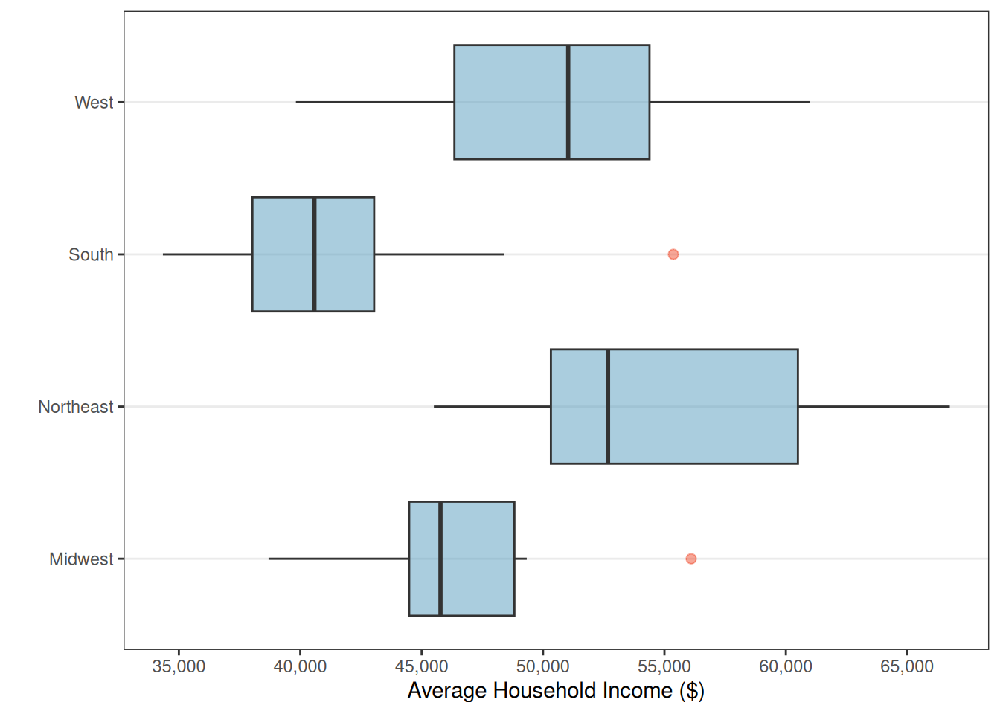
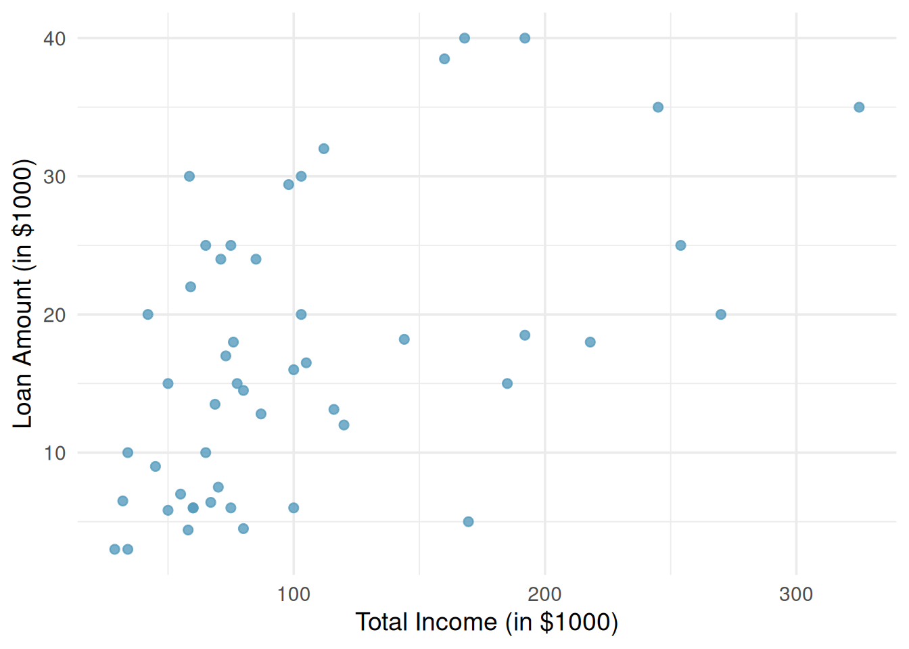

1.5 Relationships Between Variables
The preceding chapters focused on exploring one variable at a time. But the most interesting statistical questions involve relationships between variables. Does higher education lead to higher income? Is a drug more effective for one group than another? This chapter introduces tools for exploring relationships: side-by-side box plots and faceted histograms for comparing a quantitative variable across groups, and scatterplots for examining the association between two quantitative variables. We close with the critical distinction between association and causation.
Key Concepts
- Use a side-by-side graph to visualize a relationship between quantitative and categorical variables
- Examine a relationship between quantitative and categorical variables using comparative summary statistics
Technology for Chapter
StatLens Use the Quantitative by Group to compare distributions across groups with side-by-side box plots, histograms, and density overlays. Use the Two Quantitative Variables for scatterplots of two quantitative variables.
jamovi Use Analyses>Exploration>Descriptives, using the “Split by” input, to visualize distributions as histograms or box plots, and compute means, medians, standard deviations, and quartiles for any dataset. Use Analyses>Exploration>Scatterplot for scatterplots of two quantitative variables.
Comparing Groups
We use side-by-side plots to visualize the relationship between a quantitative variable and a categorical variable.
Some of the most interesting investigations involve comparing a quantitative variable across groups defined by a categorical variable. Sometimes when investigating the relationship between categorical and quantitative variables, it is helpful to plot them side-by-side.
Class Example 1.5.1: Average household incomes broken down by U.S. geographical region
The figure below shows a side-by-side boxplot of average U.S. household income broken down by geographical region of the U.S.
- Use these side-by-side boxplots to discuss how the average U.S. household income differs by region.
- Are there any outliers? If so, how many and estimate the values of the outliers.
- For which region(s) would it be more appropriate to use the median instead of the mean to describe the average U.S. household income? Justify your answer.
Scatterplots
A scatterplot is a graph of the relationship between two quantitative variables. If there are explanatory and response variables, we put the explanatory varible on the horizontal (x) axis and the response on the vertical (y) axis.
A scatterplot displays the relationship between two quantitative variables. Each observation is represented as a point, with one variable on the horizontal axis and the other on the vertical axis. When looking at a scatterplot, we should consider four different aspects of the plot:
Direction: Is the association positive (both variables tend to increase together) or negative (one increases as the other decreases)?
Form: Is the relationship approximately linear (following a straight-line pattern) or nonlinear (curved)?
Strength: Is the association strong (points closely follow a pattern), moderate, or weak (points are loosely scattered)?
Unusual observations: Are there any outliers — points that deviate markedly from the overall pattern?
Example 5.2 Describing Associations
Consider a dataset of 50 loans, where we plot total income on the horizontal axis and loan amount on the vertical axis:

Describe the association seen in the scatterplot in Figure 2.
Associations vs. causation
A confounding variable is a third variable that is associated with both the explanatory and response variable, but not necessarily of interest in the study.
We have explored the association between variables, but an association is not the same as causation. When two variables are associated, it mease they tend to vary together. That does not necesasrily mean one variable causes the other. There may be a confounding varible that is related to both, creating the illusion of a direct relationship.
Example 5.3 GPAs and Breakfast
A study finds that students who eat breakfast tend to have higher GPAs than students who skip breakfast. Can we conclude that eating breakfast causes higher GPAs?
Summary
This chapter introduced tools for exploring relationships between variables.
For comparing a quantitative variable across groups defined by a categorical variable, side-by-side box plots provide a compact comparison of centers and spreads, faceted histograms reveal full distributional shapes, and ridge plots overlay density curves for compact multi-group comparison.
For two quantitative variables, scatterplots reveal the direction, form, strength, and unusual features of an association.
We closed with the fundamental principle that association does not imply causation — confounding variables can create misleading associations, and establishing causation generally requires a randomized experiment.